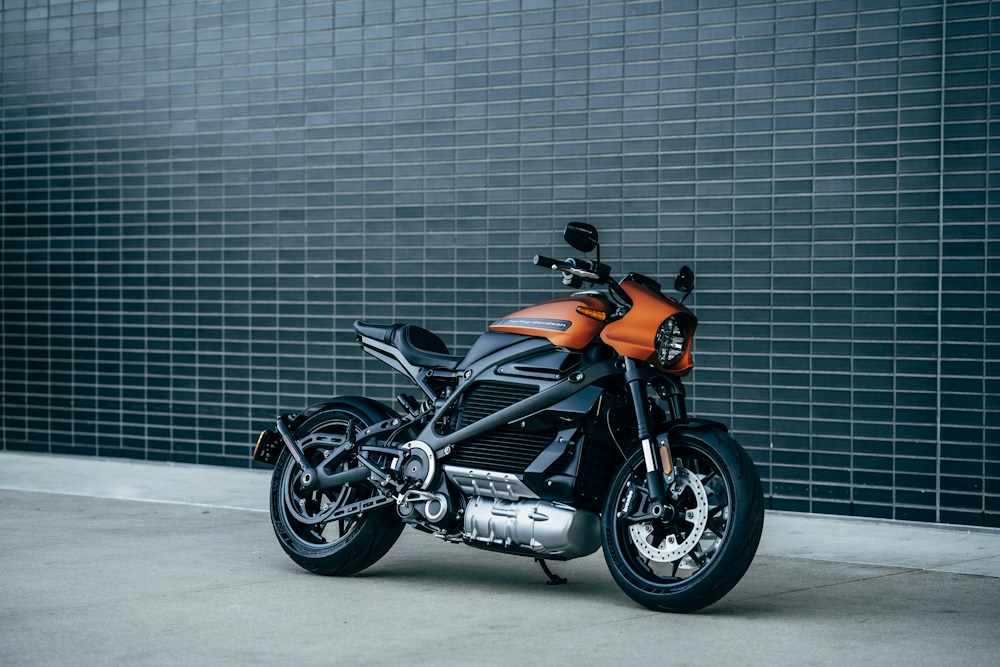

Cultura motera | Entrada 01
Una moto para cada forma de rodar
Naked, deportiva, trail o custom: las motos comparten dos ruedas, pero ofrecen experiencias muy distintas.

Naked y deportivas
Las naked prescinden de grandes carenados y suelen ofrecer una posición relativamente erguida. Son una buena referencia para conocer el concepto de moto polivalente. Las deportivas, en cambio, priorizan una postura más inclinada y una carrocería que protege del aire.
Trail y turismo
Las trail combinan una posición elevada con un planteamiento versátil. Sus capacidades fuera del asfalto dependen del modelo y del equipamiento. Las motos de turismo se orientan a los recorridos largos, con atención a la comodidad y al transporte de equipaje.
Custom y scooters
Las custom destacan por su estética y su carácter. Los scooters aportan una configuración práctica para los desplazamientos cotidianos. Más que buscar una categoría ganadora, conviene pensar en el uso que queremos dar a la moto.
La elección empieza por el uso
Ciudad, escapadas y viajes plantean necesidades diferentes. El tamaño, la postura y la facilidad de manejo ayudan a comparar conceptos sin reducirlo todo a la potencia.